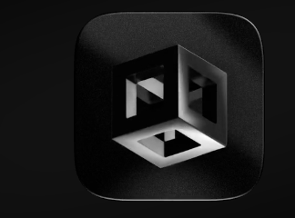
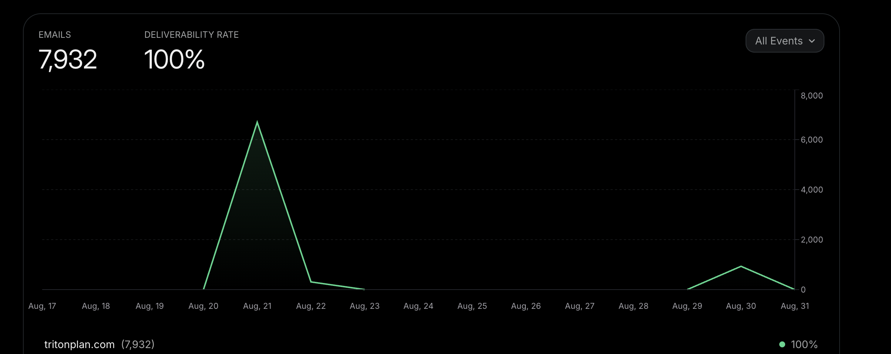

Round five — the shortlist rendered for real. Fan II, Rosette, Dynasty and Vertex II as solid extruded metal: brushed PBR steel, studio lighting, beveled edges, and a slow sway so the light moves across the metal. Live 3D — not an illustration.
Three blades of steel fanned from one grip — the rear two hang back in real depth, the lead S polished bright.
Three S’s at 120° stacked in layers inside a machined steel ring — the hood-ornament candidate.
The great S in heavy extruded steel, its two heirs floating just above its curves, sealed in the ring.
Three S’s struck from one die and stepped back through space — shadow, gunmetal, polished silver.
The fan you liked, in the elegant glyph — three S’s swung open from the bottom terminal like a hand of silver, the lead one polished.
The depth stack you liked, re-cut in curves — three S’s stepped back: shadow, gunmetal, polished silver in front.
The Benz answer — three S’s at 120° inside a thin silver ring, woven over and under at the crossings. Radial symmetry does the classiness.
Three S’s linked like jewelry — hooks clasped through hooks, the middle link polished and woven over its neighbors. Necklace logic.
One unbroken silver line that folds into three S’s, sealed in a ring — drawn without lifting the pen, like a signature pressed into wax.
The heirloom — one great S carrying two small S’s inside its own curves, ringed. A family held inside the letter.
Three S’s welded tip-to-tip — each bladed terminal docks flush into the next — one diagonal bolt of steel rising left to right. The seams are left visible: you can count three.
The monogram — three full S’s overlapped tight, each separated by a knocked-out gap. The YSL/Gucci logic executed in blade steel instead of serif brass.
Three S’s sharing their bars, fused into one column — the bottom of each S is the top of the next. A spine: Sahir, Singh, Sharma, top to base.
The literal read, done like a car badge — chrome SSS mounted on a gunmetal plinth. What AMG does with three letters on a trunk lid.
A hand of three blades fanned from one grip — the lead S in polished steel, two more swung open behind it. Three S’s, one flick of the wrist.
One S machined with two more engraved inside it — count the edges: three S’s nested in one piece of metal. The quietest of the six.
The mark. One bespoke S — flat cuts, bladed terminals, forward lean — struck in brushed steel. Nothing else in frame.
The same S forged in three strokes — Sahir, Singh, Sharma — separated by two clean sword cuts. One silhouette, three pieces.
Three S’s struck from one die, stepped back in depth — shadow, gunmetal, polished — so the count reads as dimension, not repetition.
The crest — one S ringed by three concentric bands, one per name. Hood-ornament logic: Mercedes puts the star in the circle, this puts the S.
The smooth counterpoint — one continuous S in polished steel with an engraved centerline. Softer, jewelry-grade, Apple-quiet.
The inversion — a solid steel badge with the tri-cut S punched clean through. The hardware execution: belt buckle, key fob, app icon.

